The site's new look, Character Sheet, carried into the plugin's window and the panels beside the game's windows: the ink studio, one periwinkle field a screen for the moment you came for, one sticker for the thing to do, the three honest colours for what you own, Bricolage Grotesque's heavy capitals and a hand-lettered voice. Every screen, pane and state the plugin has today is here, drawn at its real size, and every part is something ImGui can draw. This is a proposal: no C# has changed.
The site's mark: a clothes tag on its side, pointed end left with its hole, the field's gradient, a white hanger
public/favicon-glamour.svg at 1× and 2× (its gradient and the hole cut out don't draw well as a polygon). The plugin's images/icon.png (faded, right: today's rounded square) becomes the tag too: the site's npm run marks already writes the in-game plugins' icons from src/features/marks.ts.
--gs-* tokens (styles/glamour.css), as UI/Kit/Palette.cs would hold them. Lines are given opaque so they read the same on any ground.
| Today (0.6.16) | Character Sheet |
|---|---|
| The rail down the left (Home, Looks, Plates, Closet, Tidy up · Make room) and your character at its foot | The site's bar across the top: the tag and GLAMOUR STUDIO, the five places with counts and a holo underline; your character's initials and how its closet's sent in the pill on the right. 212px back for the screens. |
| Violet pill with white words that glows | The sticker: periwinkle, ink words, a 2px ink edge, a hard block; one a screen; turned over to ink on the field. |
| Lilac-edged “blush” hero cards | The field: one flat periwinkle moment a screen (the plate at the dresser, a look's sheet, the dresser's number, the first run). |
| Mint for yours, orchid for missing, lilac for where you are | Ice for yours, pink for missing, lavender for the wishlist, amber for what to see to. |
| Iridescent progress bar | Ice bars (violet while working); holo only for the tab you're on, new things, loves and wishes come true. |
| Outfit 700/600 in normal capitals | Bricolage Grotesque 800 in capitals; Shantell Sans for the hand voice. |
| A look: pieces as the gear window, ring in the middle, cards on the right | The same layout as a character sheet on the field: pieces as callouts, the name echoed behind, the palette strip, the plate slip. |
| Glow under the question card | No glow: ink, a strong hairline, 28px corners, its heading in display capitals. |
| Empty lists as a line of text | The sign, a cloud, one line, one action (no hand), as the site's empty pages. |
| “You could wear now”, “Wear now”, “Keep it as a look” for your outfit | “Wear today”, and “Copy my game outfit” (the site's words); “Keep it as a look” stays for a plate or someone examined. |
Eleven pages, 43 frames, each at its real size on the game behind it, numbered notes under each
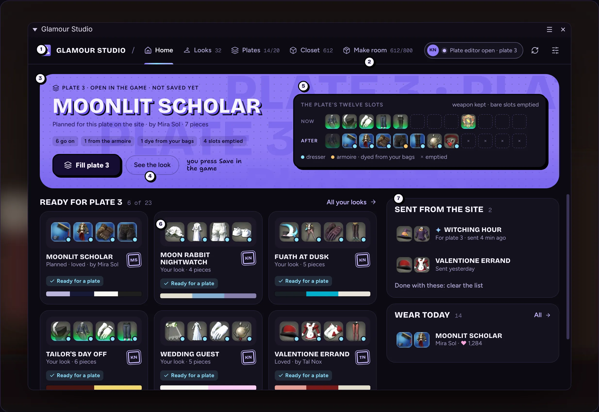
1 · HomeAt the dresser with a plan (the field, Fill plate 3); filled; away from a dresser; the first run, not linked.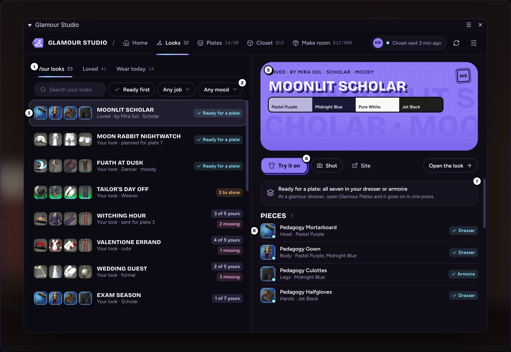
2 · LooksYour looks with one picked; with Glamour Plates open (the plate slip); Wear today; empty, loading, nothing found, refused token.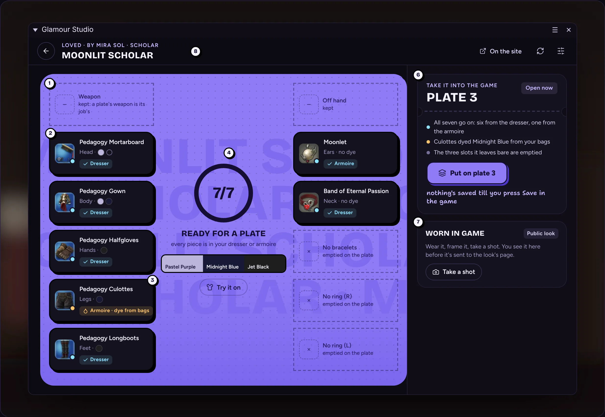
3 · A lookReady with the editor open; not ready (put away first, Into the armoire); Put on a plate…; a shot for the site.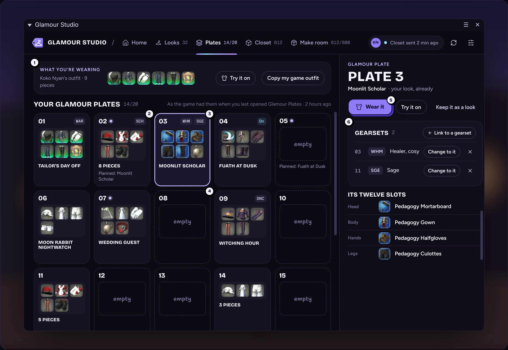
4 · PlatesAll twenty with one picked, Wear it, gearsets; Link to a gearset and Wear blocked; not read yet.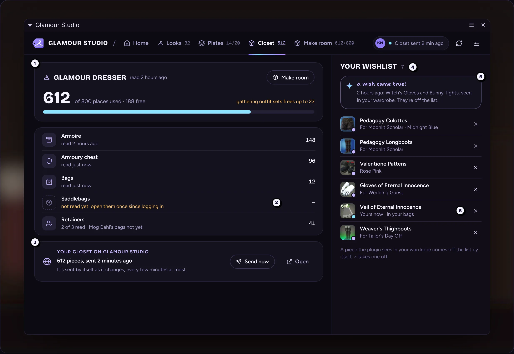
5 · ClosetWhere your gear is, on the site, your wishlist and a wish come true; sending, a problem, off, not asked, not linked, empty.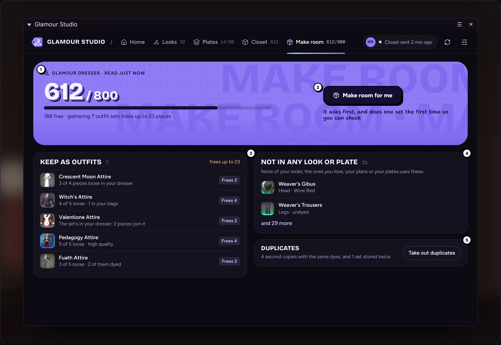
6 · Make roomThe dresser's number; it asks first (one set); storing with progress and Stop; done with one left; take out duplicates.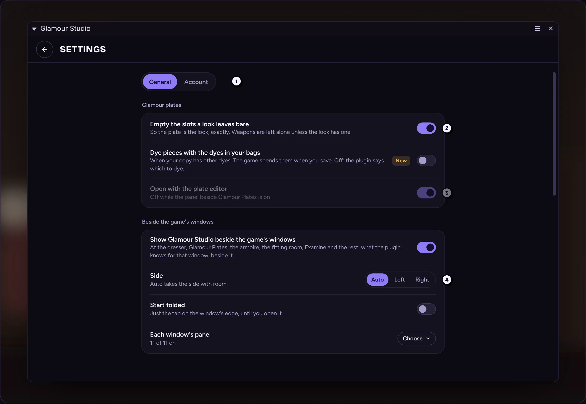
7 · Settings and the recorderGeneral; the whole column; recording and stopped; Account linked with characters; not linked, a bad token, Forget this character?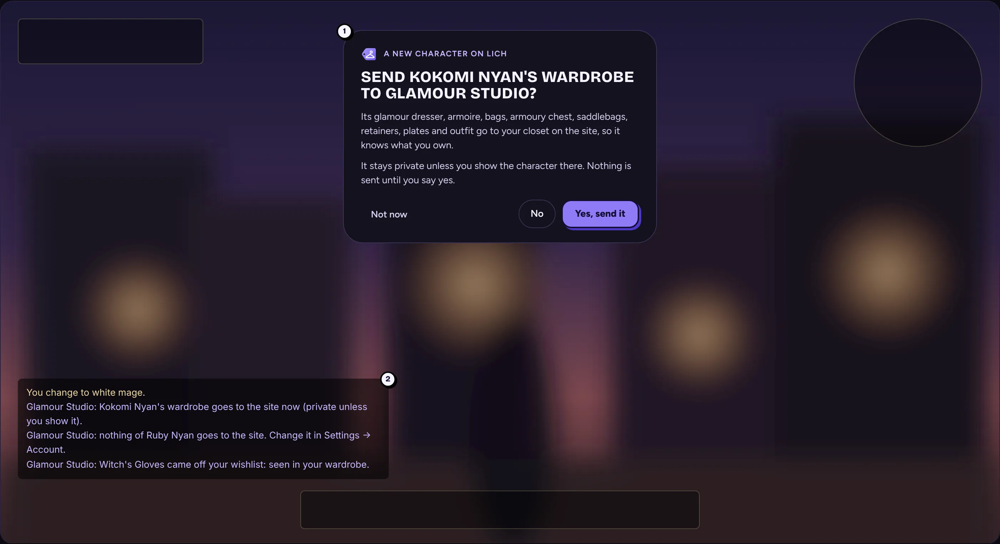
8 · Asking about a characterThe question over the game, the chat lines, and the pill's character states.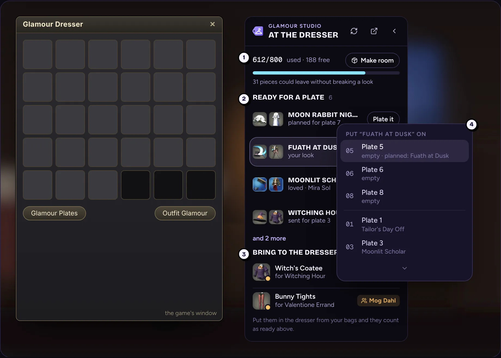
9 · Beside the dresser and Glamour PlatesThe dresser's panel, Plate it's menu, folded, Make room pressed twice, working, not linked; Glamour Plates with a plan, filled, saved, unsaved, no plan; the Character window's plates.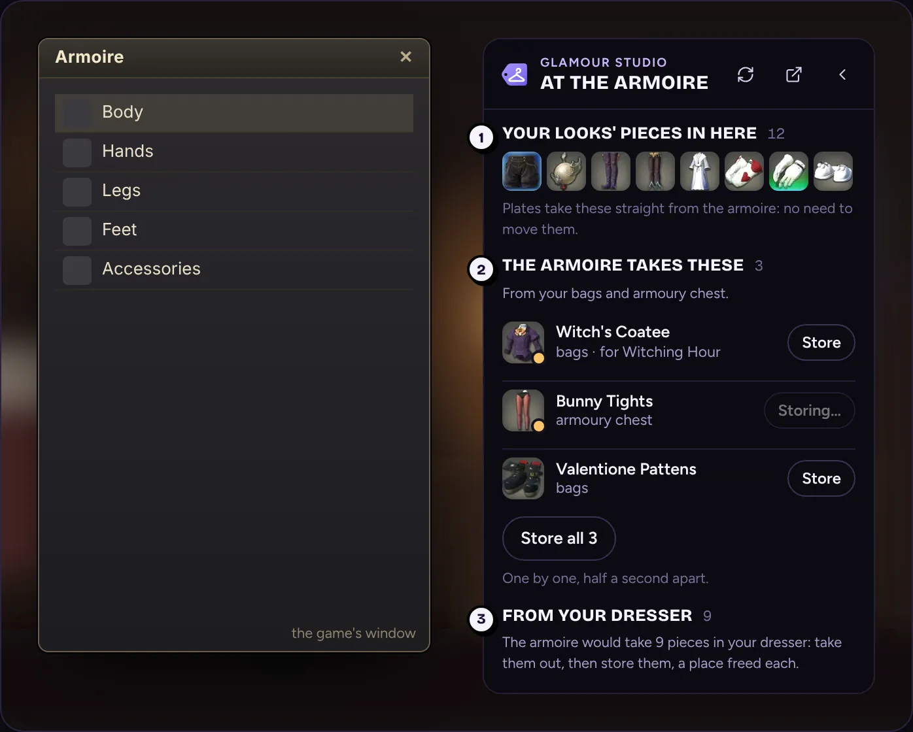
10 · Beside the other windowsArmoire, storing an outfit set, fitting room, Examine, dye, a retainer, the market board, a shop; tooltip lines and the right-click menu.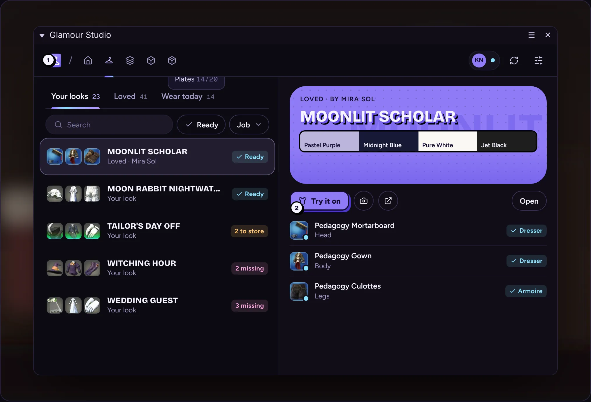
11 · Popups, toasts, the small window900 × 600; toasts, tooltips, a combo, every state of the header's pill, a failed screen, refreshing.